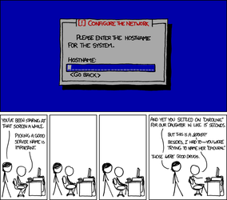
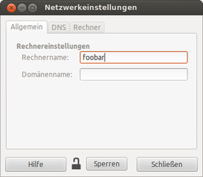

Rechnername
Dieser Artikel wurde für die folgenden Ubuntu-Versionen getestet:
Dieser Artikel ist größtenteils für alle Ubuntu-Versionen gültig.
Zum Verständnis dieses Artikels sind folgende Seiten hilfreich:
 Anhand des Rechnernamens kann man einen Rechner im Netzwerk erkennen. So sieht man z.B. in der Windows-Netzwerkumgebung den Namen des Rechners, wenn dieser über Samba-Freigaben im Netzwerk zur Verfügung steht. Möchte man diesen Namen ändern, so kann man dies sowohl direkt in der Desktopumgebung als auch per Kommandozeile vornehmen.
Anhand des Rechnernamens kann man einen Rechner im Netzwerk erkennen. So sieht man z.B. in der Windows-Netzwerkumgebung den Namen des Rechners, wenn dieser über Samba-Freigaben im Netzwerk zur Verfügung steht. Möchte man diesen Namen ändern, so kann man dies sowohl direkt in der Desktopumgebung als auch per Kommandozeile vornehmen.
Eine zentrale Rolle bei der Namensvergabe spielt die Datei /etc/hosts.
|  |
Permanence  |
Allgemein¶
Jeder Computer braucht einen Namen. Besonders in größeren Netzwerkumgebungen ist eine manuelle Zuweisung notwendig, da sonst keine Übersicht gewahrt werden kann. Zur Vergabe dieser gibt es mehrere generelle Vorgehensweisen. Die wichtigsten sind:
"praktische Namensvergabe": Der Computername besteht ausschließlich aus Informationen zum Gerät wie Verwendungszweck, installiertes Betriebssystem, Hardwarehersteller/Typbezeichnung (z.B. private Umgebungen), Name des Bedieners oder Standort (z.B. kleine Firmennetze), Inventarnummern (z.B. große Firmennetze).
"kreative Namensvergabe": Ein Computer erhält einen Namen aus einem bestimmten Kontext, bspw. Filme, Mythologie oder naturwissenschaftliche Themen. Dies hat zur Folge, dass man sich die Computernamen i.d.R. merken muss, weil man anhand der Informationen zum Gerät nicht automatisch auf dessen Namen schließen kann. In sehr großen Umgebungen, insbesondere wenn man nicht mal kurz zum Gerät hinlaufen kann, ist also eher davon abzuraten.
"Nummerierung": Die Geräte werden einfach durchnummeriert, meistens in Verbindung mit einer anderen Methode. Hierzu eignen aufgrund der Zeichenkodierung fast ausschließlich die Nummerierungen nach römischem oder indisch-arabischem Standard. Um eine bessere Unterscheidung zu erreichen, kann bei Anwendung des römischen Standards auf "Zwischenschritte" verzichtet werden. Somit wären mit I→V→X→L→C→D→M im von ASCII abbildbaren Bereich sieben Gerätegenerationen möglich (vorausgesetzt, bei jedem Gerätewechsel erfolgt ein Hochzählen).
| Beispielnamen | |||
| Figur | Kurzbeschreibung | Geräteklasse | Interpretation |
| Homer Simpson | Familienvater | Storage-Server | Nicht mit allzugroßer Intelligenz gesegnet, dafür aber mit viel Platz. |
| Marge Simpson | Homers Frau / Mutter | Domänencontroller | Organisiert das ganze Netzwerk/Familie, hat den Blick über alles. |
| Host für Virtuelle Server | Denkt für viele andere mit; macht den Haushalt. | ||
| Bart Simpson | Sohn | Mobiltelefon | Immer Unterwegs, kann sich nicht lange an einem Ort aufhalten. |
| Lisa Simpson | Tochter | Entwicklungsserver | Kann alles; versucht Probleme zu lösen anstatt sich darüber zu Ärgern. |
| Maggie Simpson | Babytochter | Kleinstcomputer wie Raspberry Pi | Sehr intelligent, jedoch meist unscheinbar im Hintergrund. |
| Chief Clancy Wiggum | Polizeichef | Proxy-Server | Kontrolliert als Polizeichef den (Internet-)verkehr. |
| C. Montgomery Burns | Besitzer des Atomkraftwerks | USV | Ist für die Energieversogung zuständig. |
Unity/GNOME 3¶
Unter aktuellen Ubuntu-Versionen sollte der Rechnername wie unten beschrieben im Terminal geändert werden.
|  |
| Dialog bei MATE |
MATE¶
Unter MATE (und früher GNOME 2 war bzw.) ist es sehr einfach, den Rechnernamen zu ändern. Dazu ruft man
"System -> Systemverwaltung -> Netzwerk -> Allgemein"
auf und trägt den neuen Rechnernamen ein. Anschließend meldet man sich ab und anschließend wieder neu an. Danach ist der Rechner umbenannt. Falls man Dienste wie Samba nutzt, so muss man diese ebenfalls neu starten, damit der Rechner mit seinem neuen Namen auch aus dem Netzwerk ansprechbar ist.
Achtung!
Leider wird dabei der Name nicht in der /etc/hosts angepasst. Dies sollte manuell nachgeholt werden. Siehe unten.
Xfce¶
Unter Xfce findet sich die Netzwerkeinstellung unter
"System -> Netzwerk"
Im nun geöffneten "network-admin" kann man unter dem Reiter "Allgemein" den "Rechnernamen" ändern. Danach wird man darauf hingewiesen, dass man erst wieder neue Anwendungen starten kann, wenn man sich neu angemeldet hat und man erhält nochmal die Möglichkeit, sich gegen die Namensänderung zu entscheiden.
Wenn einem danach ist, kann man auch noch unter dem Reiter "Rechner" per "Eigenschaften" für die IP-Adresse 127.0.1.1 den Alias (im Feld "Aliases") auf den Rechnernamen wechseln (dies wird auch nach einem Logout nicht selbständig durchgeführt).
Terminal¶
Achtung!
Diese Änderungen sollten in einer Rootshell oder im Recovery Modus erfolgen, da sonst das Risiko besteht, dass man sich aus dem Rechner aussperrt.
Der Rechnername muss in zwei Dateien in einer bestimmten Reihenfolge geändert werden. Die Änderungen kann man mit jedem beliebigen Editor[2][3] ausführen.
Als erstes muss die Datei /etc/hosts geändert werden:
127.0.0.1 localhost 127.0.1.1 meinrechnername ...
Nun (anschließend!) muss die Datei /etc/hostname angepasst werden:
meinrechnername
Wird dies als 1. Schritt gemacht, sperrt man sich aus und Programme können nicht mehr standardmäßig starten, da der Hostname nicht aufgelöst werden kann!
Als letztes wird der Rechnername mittels des Befehls [3][4]:
sudo hostname -F /etc/hostname
gesetzt.
- Erstellt mit Inyoka
-
 2004 – 2017 ubuntuusers.de • Einige Rechte vorbehalten
2004 – 2017 ubuntuusers.de • Einige Rechte vorbehalten
Lizenz • Kontakt • Datenschutz • Impressum • Serverstatus -
Serverhousing gespendet von